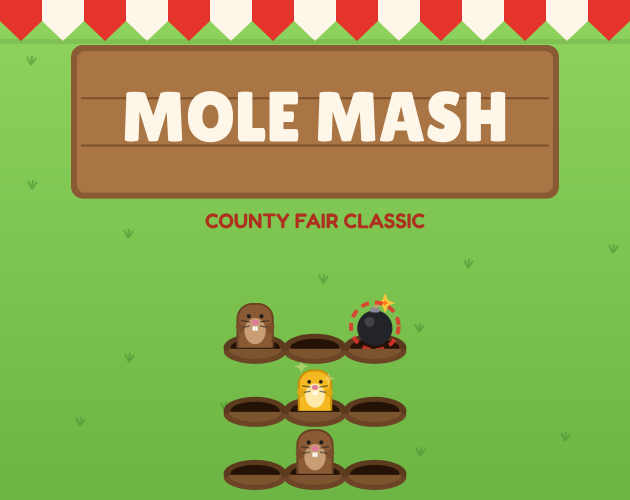
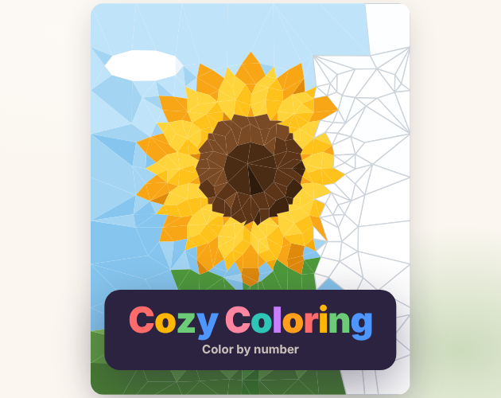

itch.io 업로드
Mole Mash · Cozy Coloring — 스튜디오 표기 Treasurefield Studio. 컴퓨터 브라우저에서 순서대로.
순서
- https://itch.io/register 에서 계정 만들기. 사용자 이름은
treasurefieldstudio(실명·회사명 쓰지 않기). 이메일 인증. - 오른쪽 위 계정 메뉴 → Upload new project (또는 https://itch.io/game/new).
- Title: 아래 표의 제목. Project URL 은 자동으로 채워진다.
- Short description or tagline: 아래 "한 줄".
- Classification: Games. Kind of project: HTML.
- Release status: Released. Pricing: No payments.
- Uploads → Upload files → zip 선택 → 올라가면 그 파일 옆 "This file will be played in the browser" 체크.
- Embed options (zip 을 올리면 나타남):
· Viewport dimensions: 450 × 800
· Mobile friendly 체크, Orientation Portrait
· Automatically start on page load 체크(Mole Mash 만. 컬러링은 체크 안 해도 됨)
· Fullscreen button 체크
· "Click to launch in fullscreen" 은 체크하지 않기 - Details → Description: 아래 "본문" 붙여넣기.
- Genre: 아래 표. Tags: 아래 10개를 하나씩 입력.
- Cover image:
cover-630x500.png. Screenshots:screenshot-1~5.png다섯 장. - 맨 아래 Visibility & access: 처음엔 Draft 로 저장 → 페이지 미리보기에서 게임이 뜨는지 확인 → Public 으로 바꾸고 다시 Save.
- 공개 주소(예:
https://treasurefieldstudio.itch.io/mole-mash)를 게시판board/playables.md에 적어 주면 끝.
Mole Mash


Title
Mole Mash
Short description
Whack moles, dodge bombs, and see how many levels you can last.
Genre
Action
Tags (enter one by one)
whack-a-mole, arcade, casual, mobile, score-attack, reflex, cute, 2d, short, html5
Description
Moles pop out of nine holes. Tap them before they sink back down. Each level lasts 30 seconds, and the next one is faster with more bombs. Hit a bomb or let a mole get away and you lose a heart; clear a level and you get one back. Golden moles are worth extra, alarm clocks give you more time, and a full gift box hands you a new hammer. Controls: tap or click the moles, or press 1–9 on the keyboard. P pauses. Made by Treasurefield Studio. Sounds and music are CC0 (credits are in the game files).
Screenshots (tap to save)


Cozy Coloring


Title
Cozy Coloring
Short description
A calm color-by-number book: 20 low-poly pictures to fill in.
Genre
Puzzle
Tags (enter one by one)
coloring, color-by-number, relaxing, cozy, casual, mobile, art, cute, 2d, html5
Description
Pick a number from the palette and tap the matching pieces to paint them. Every finished picture opens the next one, from a little ladybug to a big sunflower. Pinch or use the + and − buttons to zoom in on small pieces, and hold the eye button to peek at the finished picture. Your colors are saved in the browser, so you can stop and come back any time. Controls: tap to paint, pinch or scroll to zoom. Works on phones and computers. Made by Treasurefield Studio. Sounds and music are CC0 (credits are in the game files).
Screenshots (tap to save)